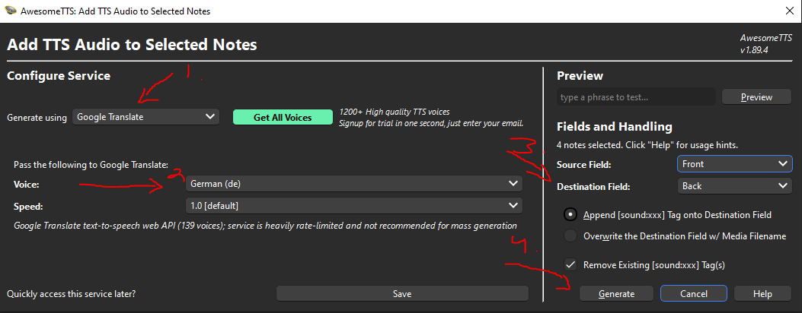

Kappale 3 Audiot kortteihin
Jos haluat sanoihin vielä audion, että kuulet miten ne äännetään, niin se onnistuu AwesomeTTS-lisäosan avulla
Add-onin saa, kun menee Ankissa Tools → Add-Ons → Get Add-Ons → Code-kohtaan 1436550454 → Restarttaa Anki
- Lisäosan viralliset ohjeet löytyvät täältä
3.1 Miten?
Mene pakkaan, jonne importoit sanat. Maalaa sanat, joihin haluat äänet (esim. jos importoit kortteja vain siten, että etupuolella on kohdekieli, niin voit maalata kaikki kortit) ja sen jälkeen painaa yläruudusta AwesomeTTS -> Add Audio to Selected
Kaikki äänimallit eivät ole käytettävissä ilmaisversiossa, mutta esim. Google Translate -ääni toimii useimmille kielille. Valitse se ja valitse haluamasi kieli. Tämän jälkeen voi päättää, kumman puolen kortista ääni lukee ja kummalla puolella ääni soi (esimerkissä lukee etupuolen, mutta lukee sen vasta käännettyäsi kortin).
- Sitten voi painaa generoi -> kortteihin tulee äänet (voi kestää jonkin verran aikaa)
